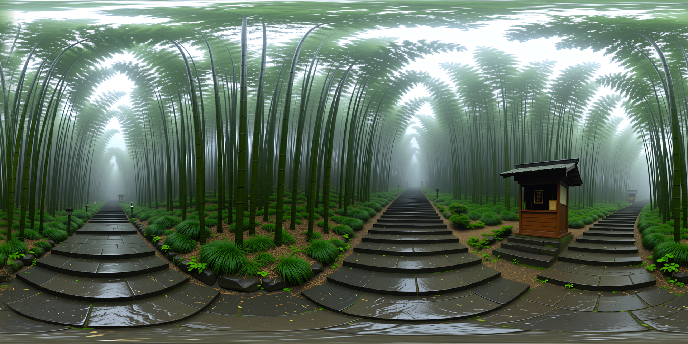
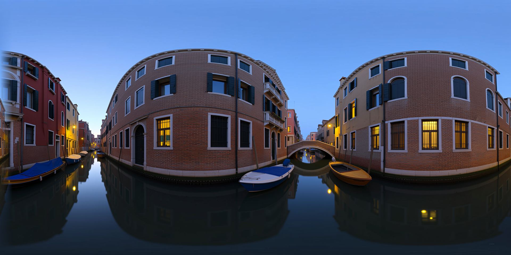
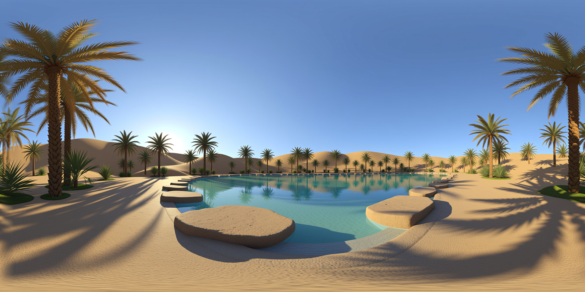

A world that
stays itself.
Walk around a corner. Look back. What you discovered should still be there. What you changed should stay changed.

Independent research · Basel, Switzerland
What if you could step inside an idea?
Explore it. Change it aloud. Understand it alongside a guide who genuinely sees the room.
84 seconds / A research film
The places, the measured progress, and the open problem driving Sciescape.
Original panoramas and recorded prototype outputs. A complete live journey remains the research goal.
Open the film0.37 cm
Median gaze-to-surface error
cut from 5.13 cm without shared state
20 / 20
Walk-and-gaze object IDs
controlled scene-state checks
240 / 240
Clean neighbor pixels on edit
with background restoration
573
Automated tests passing solo
332 client · 218 Python · 23 open runner
Measured on controlled prototype evaluations; full 360° walk-behind geometry after live edits and lifelike close-up guides remain the active 48–80 GB GPU frontier. Test live GPU depth raycasting ↗
Five generated places introduce the ambition: a world that stays coherent as you move and change it, with a lifelike guide grounded in what you see. The film separates existing visual outputs from that goal. It does not demonstrate a complete live conversation or freely walkable world.
Read the timed transcript · Film credits & provenance01 — The beginnings
Five places imagined by the Sciescape pipeline.
Choose one. Drag to look around in 360° with the live gaze-state HUD.
Follow the quiet.

Stay for the blue hour.

Let the outside wait.

A place to get lost in thought.

Find a different kind of time.
These are image-based 360° previews with verified provenance. Project any world into a rotatable 3D surface on ZeroGPU ↗ · Behind the images ↗
02 — One shared world state
Click through the three moments where disconnected generative pipelines break—and inspect how Sciescape's commit-tracked scene graph responds.
Interactive architecture walkthrough · Verified prototype figures01 / GAZE-TO-SURFACE GROUNDING
When rendering and conversation run on separate pipelines, the guide guesses from flat 2D crops and drifts off-surface (5.13 cm median error). Reading one typed 3D scene graph lets the guide raycast onto the same geometry you see and verify visibility before speaking.
03 — The ambition
We’re working toward a new way to explore an idea:
a world you can talk into being, with someone to help you understand it.
Walk around a corner. Look back. What you discovered should still be there. What you changed should stay changed.
A lifelike presence that follows your attention, reasons with you, and makes the unfamiliar understandable.
“What if…?” becomes something to explore. Speak naturally, interrupt, ask again. Let curiosity lead.
04 — The work behind the wonder
Can what you see, where you move, what you change, and what the guide knows all belong to one persistent world?
That is the question driving Sciescape. Built independently in Basel by Navish Kumar (ML PhD, University of Basel · Academic Guest, ETH Zurich) with 100% founder-owned IP and an open Apache-2.0 benchmark—publishing failures alongside breakthroughs.
An honest view of where we are
Five real panoramic outputs preserved with SHA-256 provenance, plus an 84-second research film and interactive WebGL 360° viewer.
0.37 cm median gaze error (down from 5.13 cm), 20/20 walk-and-gaze object IDs, 240/240 clean neighbor pixels on live voice edits, 573 passing automated tests, and a live ZeroGPU depth-raycast lab.
True 360° walk-behind geometry after edits across 21 frozen held-out scenes (2/21 on early local hardware) and a lifelike close-up conversational guide—our next 48–80 GB GPU milestone.
An open invitation
Try the live ZeroGPU 3D surface inspector, inspect the open Apache-2.0 runner, or reach out directly.